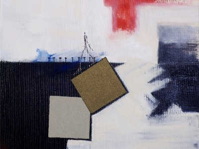
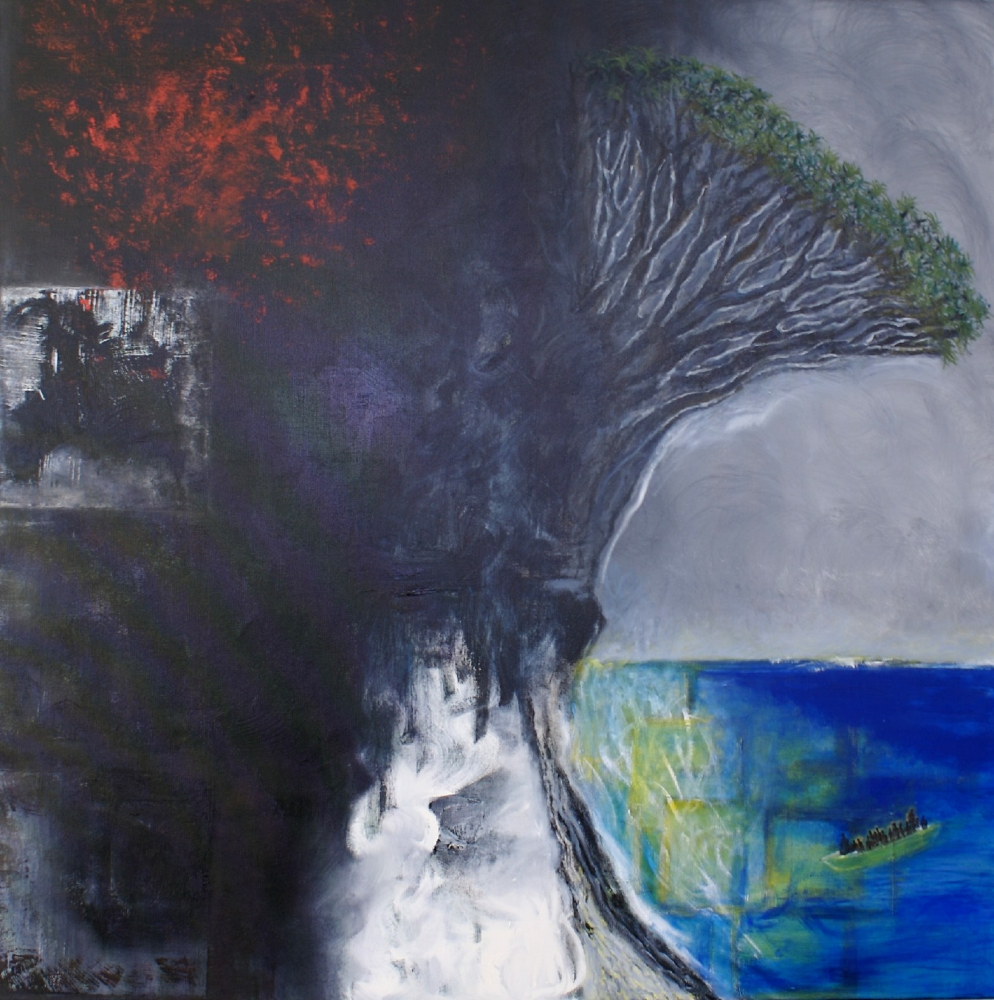
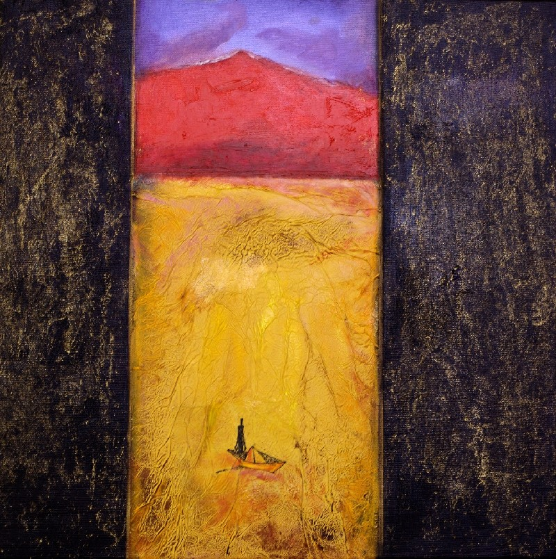
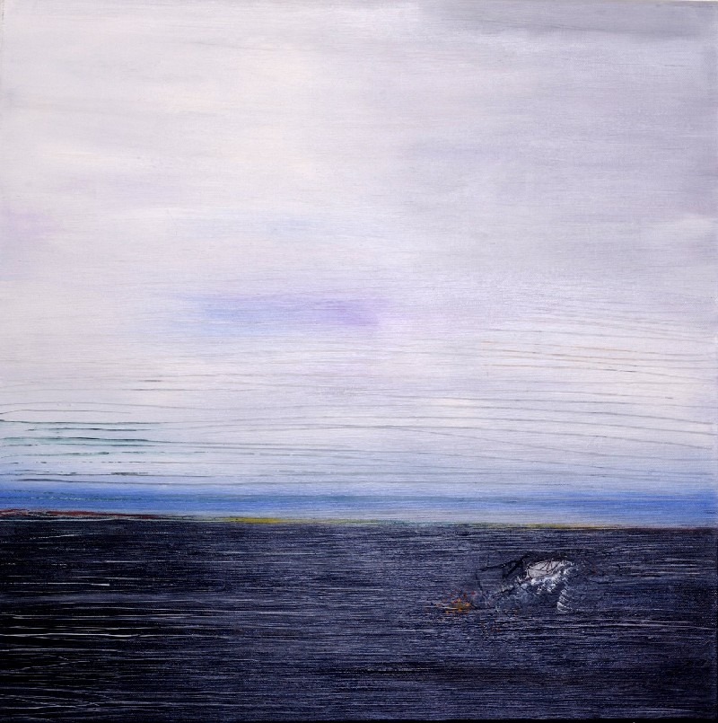
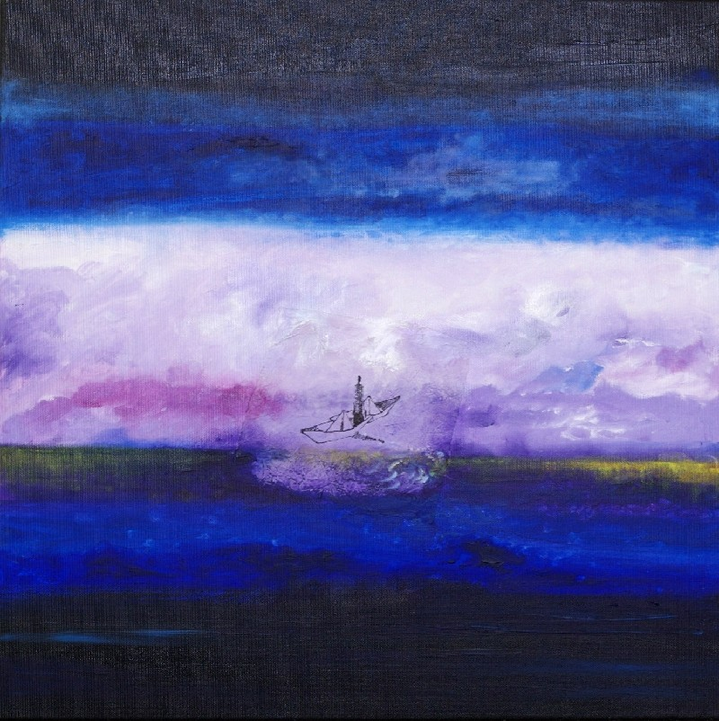

Sur le sentier du dragonnier (2008)
Dem Pflanzlichen folgend wandern, in die mystische Welt des Drachenbaums, zwischen Erinnerung und Metamorphose.

Le sentier de la vie

La force du dragonnier

Le vieux volcan

Sable noir

Sur la terre ferme
„Der Pfad des Drachenbaums ist auch der Pfad der Erinnerung, der Verwandlung …“